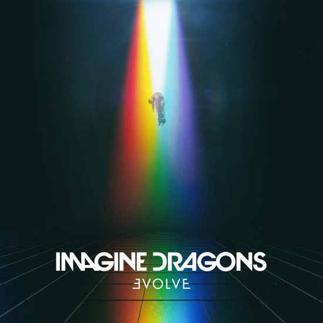
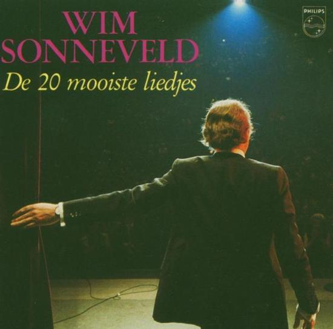
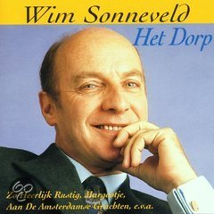

Orgins
Imagine Dragons
- Natural
- Boomerang
- Machine
- Cool Out
- Bad Liar
- West Coast
- Zero
- Bullet In A Gun
- digital
- Only
- Stuck
- Love
- Birds
- Burn Out
- Real Life
- 3:09
- 3:08
- 3:02
- 3:38
- 4:21
- 3:37
- 3:31
- 3:25
- 3:21
- 3:01
- 3:11
- 2:46
- 3:39
- 4:34
- 4:08

Evolve
Imagine Dragons
- Next To Me
- I Don't Know Why
- Whatever It Takes
- Believer
- Walking The Wire
- Rise Up
- I'll Make It Up To You
- Yesterday
- Mounth Of The River
- Thunder
- Start Over
- Dancing In The Dark
- 3:50
- 3:10
- 3:21
- 3:24
- 3:53
- 3:52
- 4:23
- 3:25
- 3:42
- 3:07
- 3:06
- 3:54

Night
Visions
Imagine Dragons
- Radioactive
- Tiptoe
- It's Time
- Demons
- On The Top Of The World
- Amsterdam
- Hear Me
- Every Night
- Bleeding Out
- Underdog
- Nothing Left To Say/Rocks
- Working Man
- Fallen
- 3:07
- 3:14
- 4:00
- 2:57
- 3:11
- 4:01
- 3:55
- 3:37
- 3:43
- 3:43
- 8:57
- 3:55
- 2:59

Smoke and Mirrors
Imagine Dragons
- Shots
- Gold
- Smoke And Mirrors
- I'm So Sorry
- I Bet My Life
- Polaroid
- Friction
- It Comes Back To You
- Dream
- Trouble
- Summer
- Hopeless Opus
- The Fall
- 3:52
- 3:37
- 4:21
- 3:50
- 3:13
- 3:50
- 3:22
- 3:38
- 4:18
- 3:12
- 3:38
- 3:59
- 6:03

De 20 mooiste liedjes
Wim Sonneveld
- Aan de Amsterdamse grachten
- Een zwoele nacht in Krimpen aan de IJssel
- Het Dorp
- Margootje
- Luchtkastelen
- Verliefd op juffrouw van Dam
- Wat moet ik doen zonder jou
- Had je niet die mooie blauwe ogen
- Een cent
- Burgemeester Beckmanlaan
- Marjolijne
- Scheveningse tram
- Huis-tuin-en keukenliedje
- Carolientje
- Huwelijkreis
- Zo heerlijk rustig
- Annemarie
- Ik heb zo vaak Amsterdam gedacht
- Het hondje van Dirkie
- Weet je nog wel oudje
- 2:37
- 2:18
- 3:16
- 4:49
- 2:52
- 3:24
- 2:52
- 4:13
- 3:08
- 4:00
- 3:01
- 4:38
- 3:46
- 2:27
- 2:48
- 2:43
- 2:30
- 3:07
- 4:36
- 2:50

Het dorp
Wim Sonneveld
- Het Dorp
- Kobie
- Catootje
- Zo heerlijk rustig
- Een Cent
- Marjolijne
- Daar is de orgelman
- Margootje
- Aan de Amsterdamse grachten
- Gerrit
- Verliefd op juffrouw van Dam
- Een zwoele nacht in Krimpen aan de IJssel
- Loflied op Dora
- Had je niet van die mooie blauwe ogen
- Liedje met bloemen
- Josefien
- 3:16
- 2:50
- 6:20
- 2:43
- 2:26
- 3:02
- 3:31
- 4:50
- 2:37
- 3:00
- 3:25
- 2:19
- 3:14
- 4:13
- 3:56
- 3:33